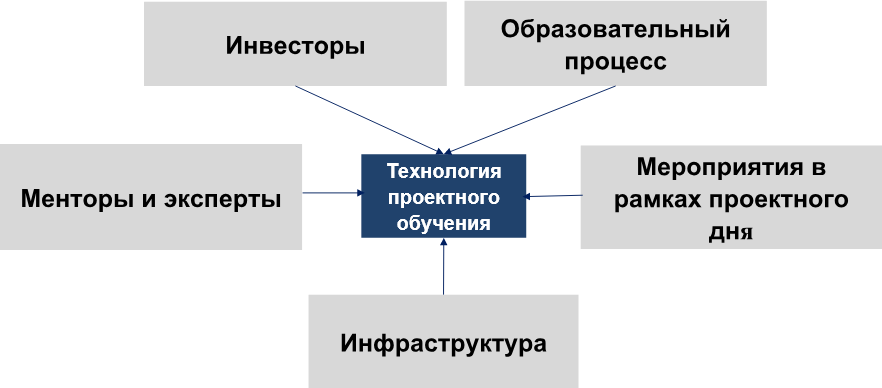

О проектном обучении
Проектное обучение как технологическое решение практической подготовки
Проектное обучение как комплексное технологическое решение практической подготовки студентов, удовлетворяющих требованиям федерального проекта «Кадры для цифровой экономики»
Задачи проектного обучения
Формирование навыков командной работы и выстраивание системы взаимодействий
Профессиональная социализация, формирование социально-ответственного поведения
Создание основы для развития профессиональных и личностных навыков
Достижение синергии знаний и навыков в ходе реализации поставленной цели при выполнении проектной работы
Проектное обучение: образовательный процесс
- проектная работа является неотъемлемой частью образовательного процесса
- дисциплины ориентированы на разработку проектов в рамках проектного обучения
- дифференцированный зачет по проектной работе в каждом семестре
- рейтинг эффективности работы ППС включает показатели эффективности по проектной работе
- положение о защите ВКР допускает защиту совместных ВКР
- выделен проектный день в расписании занятий